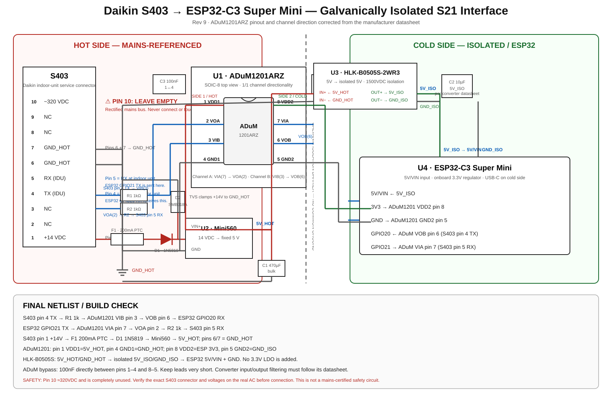

Revision: ESP32-C3 Super Mini / no IR / galvanically isolated S403 interface
This project controls the Daikin AC over its S403/S21 service interface using ESPHome. The previous Orient Zeno IR fan-blaster hardware has been removed.
| Pin | Signal | Use |
|---|---|---|
| 1 | +14 V | Module power input |
| 2 | JEM-A OUT* | Unused |
| 3 | JEM-A IN* | Unused |
| 4 | TX | AC → ESP32, through ADuM1201 channel B |
| 5 | RX | ESP32 → AC, through ADuM1201 channel A |
| 6, 7 | GND | Hot-side ground |
| 8, 9 | NC | Leave unused |
| 10 | ~320 V DC | NEVER CONNECT |
* S403 pin 2/3 functions are JEM-A related on many documented variants; this project deliberately leaves them unused. Verify your exact indoor-unit service connector before wiring.
Before connecting the module, verify the harness on the actual unit: pin 1↔6 should be around 14 V DC, and identify pins 4/5 against the exact unit. If your board differs, stop and re-map before proceeding.
| Function | ESP32-C3 pin | Notes |
|---|---|---|
| S21 RX | GPIO20 | AC TX pin 4 → ADuM VIB/VOB → RX |
| S21 TX | GPIO21 | TX → ADuM VIA/VOA → AC RX pin 5 |
| 3.3 V | 3V3 | ADuM1201 VDD2, pin 8 |
| 5 V | 5V/VIN | From isolated B0505S output |
| GND | GND | GND_ISO / cold-side ground |
| Status LED | GPIO8 | Onboard LED depends on the exact Super Mini variant |
GPIO20/21 are the ESP32-C3 UART0 pins. Because they are dedicated to S21 here, disable the ESPHome hardware logger with logger: baud_rate: 0.
| Direction | Path |
|---|---|
| AC → ESP32 | S403 pin 4 TX → R1 1k → VIB pin 3 → VOB pin 6 → GPIO20 RX |
| ESP32 → AC | GPIO21 TX → VIA pin 7 → VOA pin 2 → R2 1k → S403 pin 5 RX |
For ADuM1201ARZ the exact pinout is: 1=VDD1, 2=VOA, 3=VIB, 4=GND1, 5=GND2, 6=VOB, 7=VIA, 8=VDD2. Side 1 (pins 1–4) is the hot side; side 2 (pins 5–8) is the isolated cold side.
The hot and cold grounds remain electrically isolated. The ADuM1201 provides the bidirectional digital isolation and the HLK-B0505S-2WR3 provides isolated power. There is no IR circuitry and no JEM-A circuitry in this revision.

substitutions:
device_name: daikin-ac
esphome:
name: ${device_name}
esp32:
board: esp32-c3-devkitm-1
framework:
type: esp-idf
logger:
baud_rate: 0
external_components:
- source: github://asund/esphome-daikin-s21@main
components: [daikin_s21]
uart:
- id: s21_uart
tx_pin: GPIO21
rx_pin: GPIO20
baud_rate: 2400
data_bits: 8
parity: EVEN
stop_bits: 2
daikin_s21:
tx_uart: s21_uart
rx_uart: s21_uart
climate:
- platform: daikin_s21
name: Daikin AC
visual:
temperature_step: 1.0
status_led:
pin:
number: GPIO8
inverted: true
The S21 link is commonly documented as 2400 baud, 8 data bits, even parity and 2 stop bits. Exact protocol behavior varies by Daikin model.